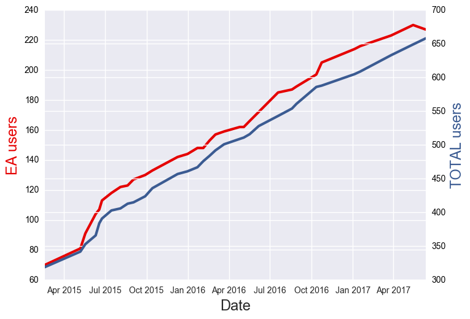

DES Data Access
An overview
Matias Carrasco Kind @ NCSA/UIUC
DES Meeting @ UChicago, June 14th
Introduction
DES Survey: Gold (Data) Mine
DESDM: Excellent job at mining the data
DES: Consumer outside the mine
Need to bring gold (data) outside
Tools and interfaces
Y3A1Y3A2 is out!
DESDM @ NCSA
cosmology.illinois.edu

Data Management and operations for DES and LSST
What do we do?
Process raw data nightly (Firstcut)
SN, transients, Alerts (SNPipeline)
Process and calibrate raw data (Finalcut)
Coadd Single Epoch images (MultiEpoch)
Serve data: Archive and catalogs (DB)
Other services: Confluence, EUPS, Interfaces, Tools, etc.
Many others...
How do I access DES Data?
NCSA, NOAO, LIneA, PIC and others have developed diffrent tools to access data
Do I need credentials?
Yes, DES Data is not public yet
Are there too many passwords in DES?
Sadly, yes
Can we do something about it?
We have improved, but unfortunately is difficult
How do I get help?
We have a help form and a questions section in confluence. Use them!
DES Science Portal
desportal.cosmology.illinois.edu
-
@ NCSA but managed by LIneA
-
Interactive Coadd Image exploration
-
Moving some services from old-portal to the Science portal
-
Already with Y3A2/Y3_DEEP data
NOAO Data Lab
datalab.noao.edu
-
They also have a VM @ NCSA but managed by NOAO
-
Ongoing initiave and release partner for DR1
-
Mutual benefits
-
Will keep data private until release
DES Labs
deslabs.ncsa.illinois.edu
-
Collection of tools and interfaces being developed at NCSA
-
Easyaccess, Jupyterhub, Des Cutout and Easyweb are active projects
-
Using Cloud computing, "Big Data" technologies, Containers and Kubernetes
-
Always looking for extra help
easyaccess 1.4.2

Some DESDM statistics
(Scroll down )
DESDM New accounts

More than 330 New users since new On-boarding!
New DES Member? Check Here
Several Services: DB, Confluence, HipChat, BitBucket, Stackoverflow
DB Users

Triple the number of users since easyaccess
More than 220 ea users with different activity levels
Feedback via github issues, stack-overflow-like questions, email list and personal inquiries
DB Quotas

Personal space actively used and constantly increasing
People create and share tables with one command
~ 5 TB in personal space, tables and index tables included
DES cutout usage

SV Release
Experimental UI projects being developed (Openstack + Kubernetes + Docker)
deslabs.ncsa.illinois.edu
Experimental UI projects being developed (Openstack + Docker)

deslabs.ncsa.illinois.edu
JupyterHub + easyaccess + JS9

- Multi-user jupyter notebook sessions
- Access with DB credentials
- Running in OpenStack ("The Cloud")
- Easy setup (Running from Docker container)
- Easyaccess and other tools installed
- Spark Cluster in alpha stage
- Local JS9 (Next gen. DS9) integration
- Still in beta mode, planning to scale up
- Open to DES collaborators
Github Org
https://github.com/DarkEnergySurvey
Ask me for invite!

Online Cutout Services
descut.cosmology.illinois.edu
-
Cutout Services for both: Coadd images and Single Epoch
-
Nice REST API so can be also accessed from e.g. python
-
Almost production-like services with GPFS mounted
Live demo!
Coadd image cutouts example
Integrated tools demo
Conclusions
-
Tools being developed to make data access easier @ LIneA, NOAO and DESDM
-
Easyaccess, Cutouts, Jupyter, Js9, Science Portal, etc...
-
Opensource and integrated software
-
Bring software to the data!
-
Want to help? Want some infrastructure? Let me know!
deslabs.ncsa.illinois.edu
Thanks!
Questions?
Matias Carrasco Kind
mcarras2@illinois.edu